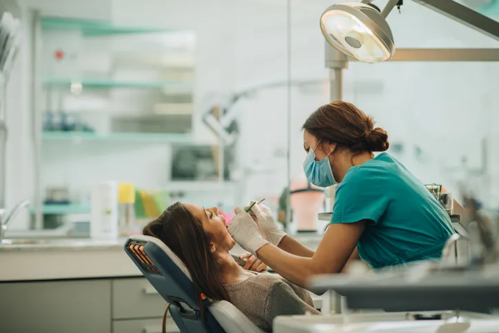

Preventive Focus
Regular exams, cleanings, and early intervention to keep your smile stable.
General dentistry is the foundation of a healthy smile. At SmileCare Dental, we focus on prevention, early diagnosis, and comfortable treatment so small concerns never become bigger problems.

From routine cleanings and digital exams to fillings, gum care, and preventive guidance, our general dentistry visits are designed to protect your teeth and support your overall oral health.
Regular exams, cleanings, and early intervention to keep your smile stable.
Comfort-minded care for fillings, gum support, and everyday dental concerns.
We keep every visit organized and efficient so you know exactly what to expect from the moment you arrive until your next follow-up.
We review your teeth, gums, bite, and concerns to understand your current oral health.
Our hygienic care removes buildup, polishes the teeth, and refreshes the smile.
We explain findings clearly and recommend only the treatment that truly helps.
We schedule the right recall interval and share home-care tips to maintain your results.
General dentistry works best when it feels simple, clear, and supportive. We built our care around that idea from the very first visit.
Skilled clinicians guide each step with a calm, friendly, and highly professional approach.
Digital tools help us detect issues early and recommend treatment with confidence.
We keep appointments gentle, efficient, and patient-focused from start to finish.
Routine care for children, adults, and seniors is handled in one trusted dental home.
Here are a few common questions patients ask about general dentistry and routine care.